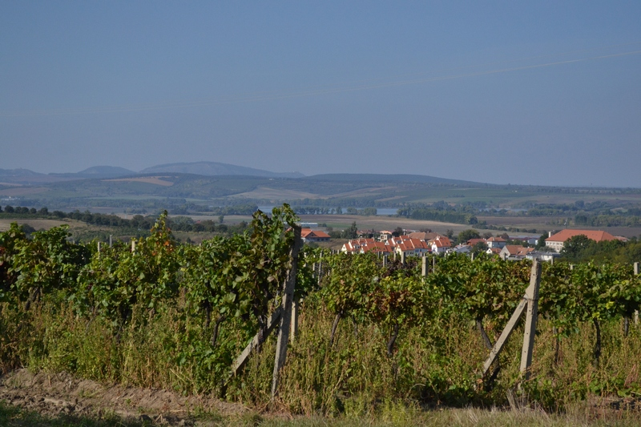
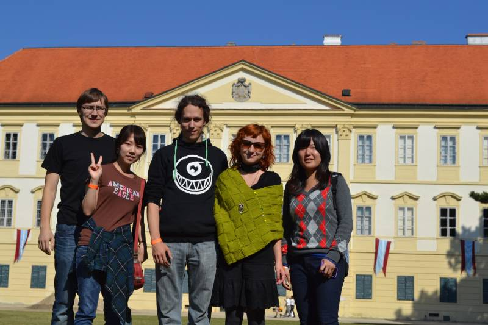
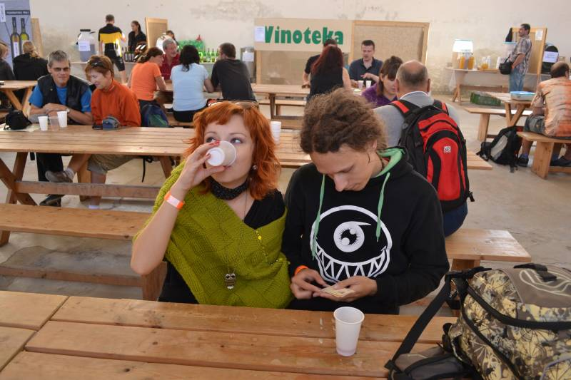
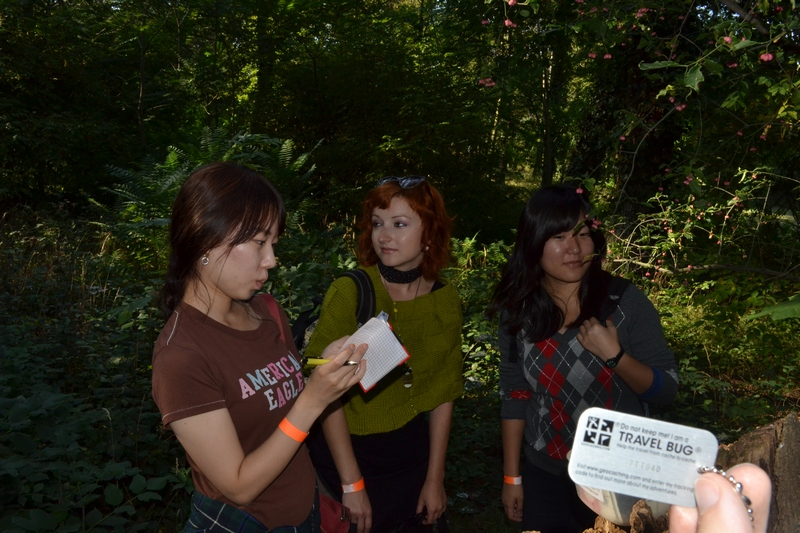
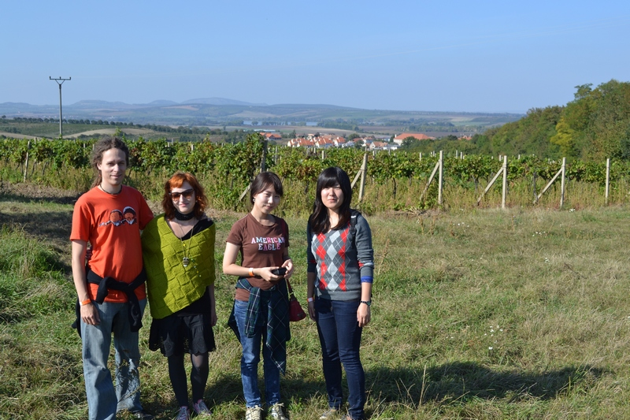
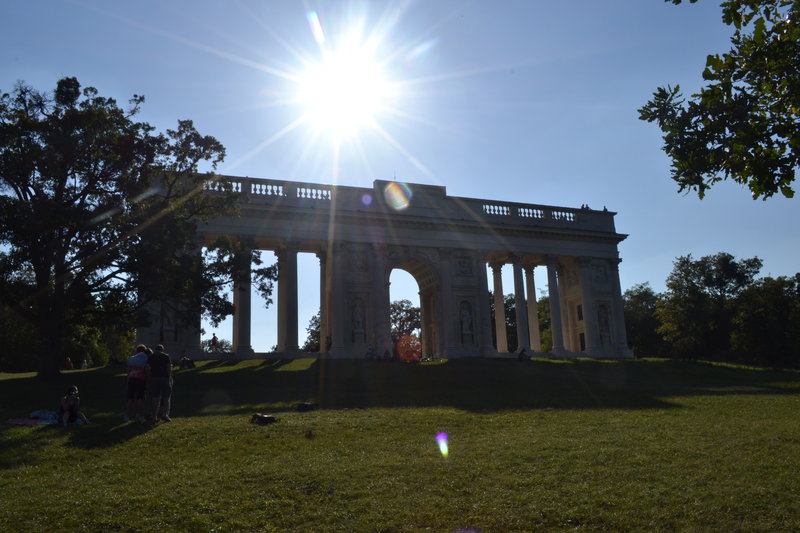
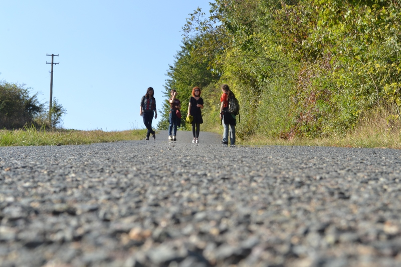
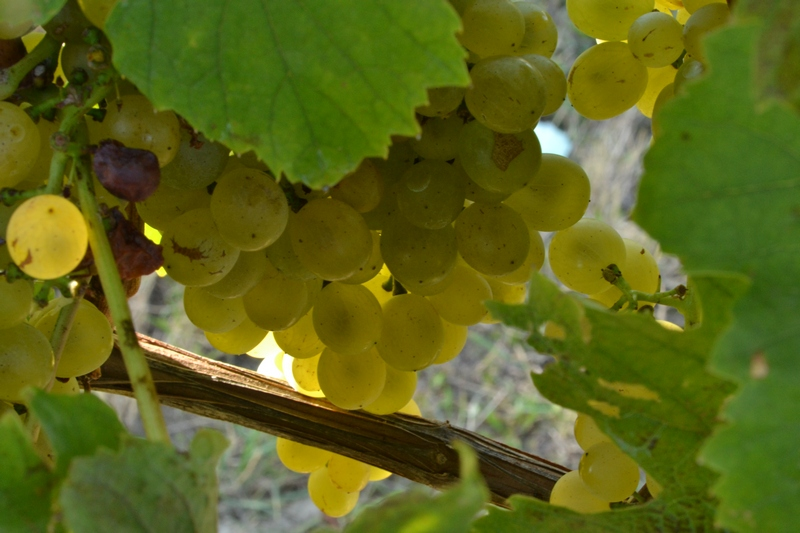

Za okny už to dávno nevypadá na to krásné babí léto…Jestli se ale chcete trochu ohřát, můžete si udělat svařák a zavzpomínat se mnou na jednu z nejkrásnějších toulek tohoto roku. Révový les, azůro na nebi, burčák a cimbál…ano, kam jinam, než do Valtic, bychom se mohli v tuhle roční dobu zatoulat :-)?

Znám jen málo krásnějších pohledů :)…
Hned na úvod je nutno říct, že valtickým slavnostem konkurovaly slavnosti česnekové, odehrávající se v tom samém termínu v nedalekých Rosicích. Oboje zdravé, oboje chutné…nu, bylo to trochu dilema, ale když jsem si vzpomněla na své první babí léto na Pálavě, měla jsem vduchu rozhodnuto. Valtice jsou nádherné i bez burčáku - natož s ním :-)!! V sobotu ráno jsme se tedy za slibného slunečního svitu sbalili a vyrazili na nádraží, kde jsme měli sraz s Frantou, Moe a Sun. Po počátečních zmatcích s nákupem jízdenky jsme nakonec pro sebe urvali kupéčko a výlet mohl začít.

Účastníci zájezdu :) - zleva Franta, Sun, Milíčovi a Moe
Cesta do Břeclavi utekla díky svačince, seznamování se Sun a obligátním komickým převodům brněnských pověstí do angličtiny :D překvapivě rychle. V Břeclavi už bylo jisté, že do Valtic se dnes krom nás chystá spousta lidu, takže jsme byli rádi, že jsme pro sebe vůbec ulovili místo ke stání. Cesta do Valtic naštěstí netrvala dlouho, motoráček nás vyplivnul na okraji města a my se nechali unášet davem směrem k místům, kde jsme tušili centrum. Naše první kroky vedly neomylně do Infocentra, abychom si nabrali letáčky a přeptali se co a jak :D. Paní nás odkázala do zámecké konírny a tam jsme konečně našli, co jsme hledali - po celé levé straně konírny se táhla řada stánků burčáků všelijakých věhlasných značek :D. Nevěděli jsme honem, který okusit dřív, a tak jsme se rozhodli, že to vezmeme pěkně popořadě O:-). Usoudili jsme také, že si jako správní degustátoři musíme udělat seznam, kde si budeme psát naše osobní poznámky o tom, jak nám který burčák chutnal. A samozřejmě v angličtině - abychom byli mezinárodní :-)!
Měli jsme po cestě žízeň, takže první burčák jsme do sebe kopli než bys řekl švec a už jsme si šli pro druhý. U všech stánků taky kluci jako profíci loudili vizitky, abychom věděli, s kterým vinařstvím máme tu čest :D. Po druhém burčáku, který docela kopal, Franta prohlásil, že už je opilý, proto jsme se rozhodli jít na chvíli ven, aby nám nedělal ostudu :D.

A už ho do sebe kopu! Kolikátý pohárek? Kdo ví…O:)
Před konírnou nás nalákaly stánky s jídlem - koneckonců jsme naposled snídali ve vlaku, takže bylo záhodno nacpat si něčím žaludky, abychom mohli pokračovat v degustaci. Mezitím jsme od ostatních návštěvníků slavností vyzvěděli, že kolem druhé hodiny by měl začít kulturní program vystoupením cimbálové muziky. Libovali jsme si, jak nám to pěkně vyjde - najíst se, ochutnat další dva burčáky, poslechnout si cimbálovku a pak se jít vyvenčit na vinnou naučnou stezku :-). Jak jsme řekli, tak jsme také udělali. Pofotili jsme pár snímků v překrásném zámeckém parku a vydali se za první dnešní keškou. Holky-erasmačky kešování neznaly, takže jsme je nejprve museli zasvětit. Nápad se jim líbil a objevení prvního pokladu v parku na sebe nenechalo dlouho čekat. Pak už nám nic nebránilo vydat se po naučné stezce na procházku okolo Valtic.

Kešování…hlavně nenápadně O:)
Počasí se skutečně vyvedlo, o čemž myslím nejlépe svědčí fotografie. Od valtických vinic bylo nádherně vidět na všechny pálavské kopce i na Mikulov se Svatým kopečkem a samozřejmě jsme si vychutnali i krásný výhled do Rakouska a na samotné Valtice.

Mezi vinicemi…
Procházka mezi vinicemi proložená hledáním několika kešek byla příjemným bodem programu a její hlavní výhodou bylo to, že jsme díky ní stihli hezky vystřízlivět :D. Zastavili jsme se také u Kolonády na Reistně, abychom holkám mohli alespoň z dálky ukázat Lednici a výhled po okolí.

Kolonáda na Reistně
Sotva jsme se s jazykem na vestě vyšplhali nahoru, zjistili jsme, že jsme někde po cestě museli ztratit flašku s nealkem :(. Ať jsme přemýšleli jak jsme přemýšleli, nevybavovali jsme si, že bysme ji někde vyndávali - krom oběda u stánků před konírnou…Nezbývalo, než s napájením počkat až do konírny :D…Koneckonců už jsme stejně byli na zpáteční cestě - posbírali jsme ještě dvě kešky a vydali se k poslední zastávce - ukázkové vinici místní vinařské školy. Přečetli jsme si tu pár informací o našich oblíbených odrůdách a konečně se vydali zpátky k zámku.

On the road
Teprve v tuhle chvíli jsem si já hlava děravá vzpomněla, že jsme se vlastně domlouvaly s Pavčou, která se ve Valticích dnes měla taky objevit, že si napíšeme a někde si dáme sraz. Samozřejmě už mi na mobilu asi hodinu blikala SMSka 8-)…Pavča s Tucinem se šli zrovna vyvenčit do zámeckého parku a my se pomalu vraceli ke konírně, která naštěstí nebyla tak velká, abychom se v ní mohli minout. Jaké bylo naše překvapení, když jsme u stánků s jídlem po haluzi narazili nejen na Pavču s Tucinem, ale i na naši zapomenutou flašku od oběda :-)! Honem jsme všechny představili a vydali se opět do konírny na další kolo burčákové ochutnávky (zjistili jsme, že Pavča s Tucinem rovněž použili naši metodu ochutnat všechny burčáky postupně a stejně jako my začínali od nejzadnějšího stánku, takže jsme mohli všichni společně pokračovat tam, kde jsme prve skončili :-)).
O další kulturní vložku se postaral taneční soubor irských tanců, ale bohužel už jsme nemohli zůstat na celé vystoupení, protože nám za půl hodiny ujížděl vlak zpátky do Brna. Honem jsme si ještě běželi koupit domácí brambůrky a petku vítězného burčáku na doma a vyrazili na vlakové nádraží. Tam se nám s Péťou nakonec ještě i podařilo udat Pavči s Tucinem jízdenky, které nám kvůli ranním zmatkům přebývaly. Vlak byl až do Břeclavi narvaný k prasknutí, ale po přestupu jsme si našli prima kupéčko a cesta zpátky utekla ještě rychleji než v opačném směru :-)…

Když si tak prohlížím fotky, říkám si, že musí být každému úplně jasné, co mě do těch jihomoravských končin pořád tak táhne. Je tam klid, který mě před dvěma lety okouzlil a který jsem od té doby nikde jinde nenašla. Všechno je tam tak jednoduché, ruch a starosti tak vzdálené… A víte co? Já mám dojem, že to je kraj, kde pořád svítí slunce, protože jsem se tam ještě nikdy s jiným počasím nesetkala. Možná proto tam taky mají tak dobré víno o:-)…

Révička
P.S. Za fotky zatleskáme Frantovi (a jeho super foťáku), protože se mu opravdu moc povedly, ale zároveň ho vytaháme za uši, protože jsme ho kvůli tomu museli měsíc uhánět :D…
Komentáře (2)
Komentáře jsou uzavřené.